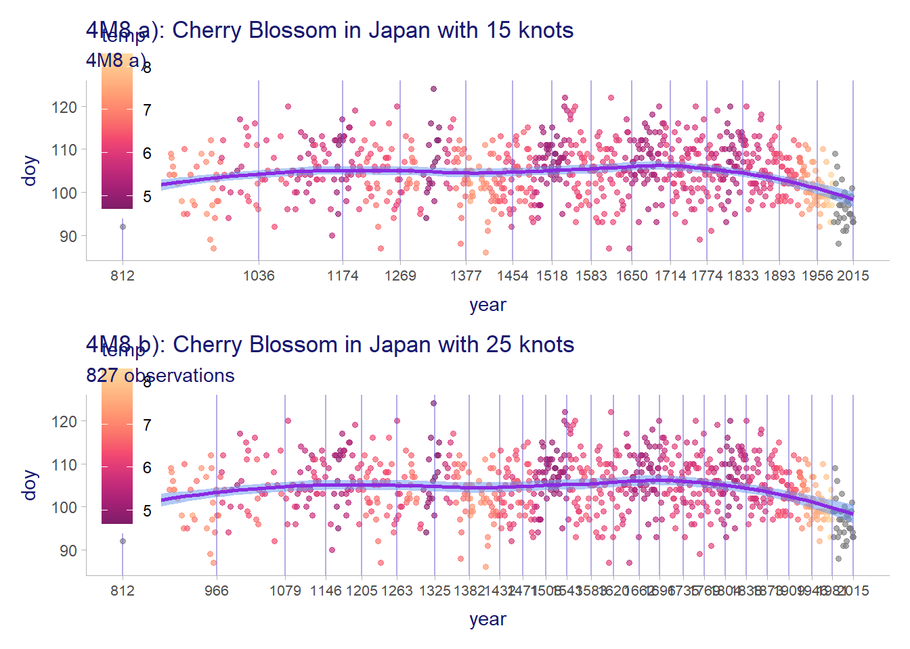
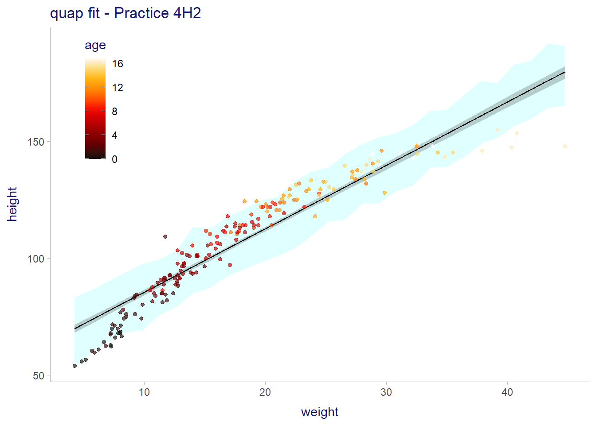
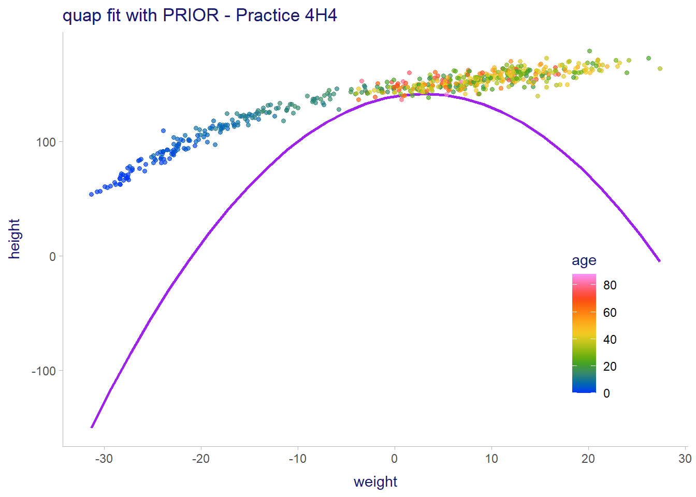

# For execution on a local, multicore CPU with excess RAM
options(mc.cores = parallel::detectCores())
# To avoid recompilation of unchanged Stan programs
rstan_options(auto_write = TRUE)4 Linear Models
# The default theme is by the plot
ggplot2::theme_set(ggdist::theme_ggdist())
ggplot2::theme_update(title = element_text(color = "midnightblue"))4E1
See section 4.4.1 in McElreath (2020)
\(y_i \sim \mathcal{N}(\mu, \sigma)\)
4E2
2 parameters, \(\mu\) and \(\sigma\) which are in the posterior distribution \(y_i \sim \mathcal{N}(\mu, \sigma)\)
4E3
See Overthinking in section 4.3.1
$$ \[\begin{align*} P(\mu, \sigma \mid \textbf{y}) &= \frac{ P(\textbf{y}, \mu, \sigma) }{ P(\textbf{y}) } \\ &= \frac{ P(\textbf{y}, \mu, \sigma) }{ \int_{\sigma} \int_{\mu} P(\textbf{y} \mid \mu, \sigma) \cdot P(\mu, \sigma) d\mu d\sigma \\ } \\ &= \frac{ \prod_i P(y_i, \mu, \sigma) }{ \int_{\sigma} \int_{\mu} \prod_i P(y_i \mid \mu, \sigma) \cdot P(\mu, \sigma) d\mu d\sigma \\ } \\ &= \frac{ \prod_i P(y_i \mid \mu, \sigma) \cdot P(\mu) \cdot P(\sigma) }{ \int_{\sigma} \int_{\mu} \prod_i P(y_i \mid \mu, \sigma) \cdot P(\mu) \cdot P(\sigma) d\mu d\sigma \\ } \\ &= \frac{ \prod_i \mathcal{N}(y_i \mid \mu, \sigma) \cdot \mathcal{N}(\mu \mid mean = 0, sd = 10) \cdot \mathcal{Exp}(\sigma \mid rate = 1) }{ \int_{\sigma} \int_{\mu}{ \prod_{i=1}^n \mathcal{N}(y_i \mid \mu, \sigma) \cdot \mathcal{N}(\mu \mid mean = 0, sd = 10) \cdot \mathcal{Exp}(\sigma \mid rate = 1) } d\mu d\sigma } \end{align*}\] $$
4E4
\(\mu_i = \alpha + \beta x_i\)
4E5
2 parameters, \(\mu\) and \(\sigma\)
4M1
See R code 4.13 in section 4.3.2 using this model.
We use the simstudy package to do the simulation. It is a wonderful tools to simulate models and will be used repeatedly in this project.
Also we use the posterior package to use the many tools this package offers to simplify using posterior samples.
sim04M01 <- list()
sim04M01 <- within(sim04M01, {
def <- defData(varname = "mu", dist = "normal", formula = 0, variance = 10^2)
def <- defData(def, varname = "sigma", dist = "exponential", formula = 1)
def <- defData(def, varname = "height", dist = "normal", formula = "mu",
variance = "sigma")
# generate the data
set.seed(53) # for fun: 53 is a balanced prime
data <- genData(n = 5000, dtDefs = def)
# get the intervals
widths <- c(0.67, 0.95, 1)
intrvl <- data |>
select(-id) |>
pivot_longer(cols = everything()) |>
group_by(name) |>
ggdist::median_qi(.width = widths)
# the breaks used for the x axis
breaks_x <- intrvl |>
filter(name == "height") |>
select(.lower, value, .upper) |>
pivot_longer(cols = everything()) |>
arrange(value) |>
pull(value)
})ggplot(sim04M01$data, mapping = aes(x = height)) +
ggdist::stat_halfeye(aes(fill = after_stat(cut_cdf_qi(cdf, .width = sim04M01$widths))),
point_interval = median_qi,
color = "darkorange") +
scale_x_continuous(breaks = sim04M01$breaks_x,
labels = scales::label_number(accuracy = 0.1)) +
scale_fill_paletteer_d("ggsci::indigo_material",
direction = 1,
name = "levels %",
labels = round(100 * sim04M01$widths, 0),
na.translate = FALSE) +
theme(legend.position = c(0.8, 0.8)) +
labs(title = "4M1: Prior prediction of height",
subtitle = sprintf("sample size = %d", nrow(sim04M01$data)))Warning: Using the `size` aesthietic with geom_segment was deprecated in ggplot2 3.4.0.
ℹ Please use the `linewidth` aesthetic instead.4M2
See section 4.4.2 on how to use quap, R code 4.43 with linear equation with the quap formula, i.e. flist = alist(...).
alist(
height ~ dnorm(mean = mu, sd = sigma),
mu = a + b * x,
a ~ dnorm(mean = 0, sd = 10),
b ~ dnorm(mean = 0, sd = 1),
sigma ~ dexp(rate = 1)
)4M3
Make sure you remember to index the \(y\) so that it is \(y_i\) as well as \(\mu\). See section 4.4.2. The published answer does not put an index on \(\mu\) but it has one on \(y\) which involves a constant \(\mu\) which is normally the intercept! This question is confusing, here we assume the same meaning as in section 4.4.2., that is \(\mu\) varies for each \(x_i\)
\[ \begin{align*} y_i &\sim \mathcal{N}(mean = \mu_i, sd = \sigma)\\ \mu_i &= \alpha + \beta x_i \\ \alpha &\sim \mathcal{N}(mean = 0, sd = 10) \\ \beta &\sim \mathcal{Uniform}(mean = 0, sd = 1) \\ \sigma &\sim \mathcal{Exponential}(\lambda = 1) \end{align*} \]
4M4
Don’t forget the index so that \(height\) is \(height_i\).
This will be giving the average height per year. The question is not clear that it wants it by student also.
\[ \begin{align*} height_i &\sim \mathcal{N}(\mu_i, \sigma) \\ \mu_i &= \alpha + \beta \cdot year_i \\ \alpha &\sim \mathcal{N}(100, 10) \\ \beta &\sim \mathcal{Uniform}(0, 10) \\ \sigma &\sim \mathcal{Exponential}(1) \end{align*} \]
The choice of priors are * \(\alpha\): The intercept reflect the population average which is 100 and we expect the 95% of the population to be between 80 and 120 at the very most * \(\beta\): The coefficient should be nonnegative as the height should increase or stay the same in younger age. We choose uniform distribution as we have no information whatsoever about the rate of growth. * \(\sigma\): The overall outcome variance should be positive with a skewed distribution, hence using \(\mathcal{Exponential}(1)\). See p. 118 and p. 119 on using the exponential distribution in the textbook.
4M5
This tells us that \(\beta\) should always be positive be with large values unlikely. We therefore use the log-normal dist as a prior for \(\beta\). See section 4.4.2.
\[ \begin{align*} height_i &\sim Normal(\mu_i, \sigma) \\ \mu_i &= \alpha + \beta \cdot year_i \\ \alpha &\sim \mathcal{Normal}(100, 10) \\ \beta &\sim \mathcal{LogNormal}(0, 1) \\ \sigma &\sim \mathcal{Exponential}(1) \end{align*} \]
4M6
Instead of using the average range as a prior for \(\sigma\) we would use \(\sigma = \sqrt{64} = 8\).
In the official solution solution McElreath says it should be \(\sigma \sim Uniform(0, 64)\), no sqrt of the variance to obtain the standard deviation is done.
\[ height_i \sim Normal(\mu_i, \sigma) \\ mu_i = \alpha + \beta \cdot year_i \\ \alpha \sim Normal(120, 10) \\ \beta \sim Normal(0, 10) \\ \sigma \sim Uniform(0, 8) \]
4M7
See section 4.4.2 for model m4.3. We add the centered weight to the data and call it \(weight_c\).
data(Howell1)
data04M07 <- Howell1 |>
filter(age >= 18) |>
mutate(weight_c = as.vector(scale(weight, center = TRUE, scale = FALSE)))
rm(Howell1)
skimr::skim(data04M07)| Name | data04M07 |
| Number of rows | 352 |
| Number of columns | 5 |
| _______________________ | |
| Column type frequency: | |
| numeric | 5 |
| ________________________ | |
| Group variables | None |
Variable type: numeric
| skim_variable | n_missing | complete_rate | mean | sd | p0 | p25 | p50 | p75 | p100 | hist |
|---|---|---|---|---|---|---|---|---|---|---|
| height | 0 | 1 | 154.60 | 7.74 | 136.52 | 148.59 | 154.30 | 160.66 | 179.07 | ▂▇▇▃▁ |
| weight | 0 | 1 | 44.99 | 6.46 | 31.07 | 40.26 | 44.79 | 49.29 | 62.99 | ▃▆▇▃▁ |
| age | 0 | 1 | 41.14 | 15.97 | 18.00 | 28.00 | 39.00 | 51.00 | 88.00 | ▇▇▃▂▁ |
| male | 0 | 1 | 0.47 | 0.50 | 0.00 | 0.00 | 0.00 | 1.00 | 1.00 | ▇▁▁▁▇ |
| weight_c | 0 | 1 | 0.00 | 6.46 | -13.92 | -4.73 | -0.20 | 4.30 | 18.00 | ▃▆▇▃▁ |
Model
\[ \begin{align*} height_i &\sim \mathcal{N}(\mu_i, \sigma) \\ \mu_i &= \alpha + \beta(x_i - \bar{x}) \\ \alpha &\sim \mathcal{N}(178, 20) \\ \beta &\sim \mathcal{LogNormal}(0, 1) \\ \sigma &\sim \mathcal{Exp}(1) \end{align*} \]
Fitting strategies
This practice is used to illustrate 3 different methods that can be used to fit the model to the data. They are from the package rethinking (of course), the very well-known package brms that is used in Kurz (2019) and the package INLA which state of the art and is explained, for example, by Gomez-Rubio (2020) and Xiaofeng Wang (2018).
The package tidybayes is used to harmonize the different commands and demonstrate that the process is the same. Since there is no tidybayes command for INLA, similar functions are coded in the eflINLA package.
The package posterior is used to harmonize the results from these 3 types of fit.
Priors
We simulate the priors using the specifications from the model. The lognormal distribution is not available in simstudy. The solution is to create a custom (nonrandom) distribution as demonstrated in lognormal. However this gives me an error message, so instead, beta is exponentiated in mu’s formula.
sim04M07 <- list()
sim04M07 <- within(sim04M07, {
xrng <- paste(round(range(data04M07$weight_c)), collapse = ";")
def <- defData(varname = "x", dist = "uniform", formula = xrng)
def <- defData(def, varname = "alpha", formula = 178, variance = 20^2)
def <- defData(def, varname = "beta", formula = 0, variance = 1^2)
def <- defData(def, varname = "sigma", dist = "exponential", formula = 1)
forml <- "alpha + exp(beta) *x" # convert beta to exp since it is lognormal dist
def <- defData(def, varname = "mu", dist = "nonrandom", formula = forml)
def <- defData(def, varname = "height", formula = "mu", variance = "sigma")
set.seed(157) # for fun: 157 is a balanced prime
data <- genData(n = 1000, dtDefs = def)
# stats used for vertical lines by the plot
vlines <- data.frame(
model = c("prior", "observed"),
mode = c(ggdist::Mode(data$height), ggdist::Mode(data04M07$height)))
})ggplot(sim04M07$data) +
geom_density(aes(x = height, y = after_stat(scaled), color = "prior"),
linewidth = 1, alpha = 0.8) +
geom_density(data = data04M07, aes(x = height, y = after_stat(scaled), color = "observed"),
linewidth = 1, alpha = 0.8) +
geom_vline(data = sim04M07$vlines, mapping = aes(xintercept = mode, color = model),
linetype = "dashed") +
scale_color_manual(values = c("prior" = "mediumvioletred",
"observed" = "mediumseagreen")) +
scale_x_continuous(breaks = scales::breaks_pretty(n = 7)) +
coord_cartesian(xlim = c(50, 300)) +
theme(legend.position = c(0.8, 0.8)) +
labs(title = paste0(
"4M7: Comparing prior predictive distribution vs observed distribution",
"\n", "vertical lines = mode"),
x = "height", y = NULL, color = NULL)The prior is reasonable as it reflects an opinion on the overall general population.
Using quap
Fits
The fit using the centered, model m4.3 in textbook.
fit04M07 <- list()
tictoc::tic(msg = sprintf("run time of %s, use the cache.", "1 secs."))
fit04M07$quap_ctr <- xfun::cache_rds({
quap(
flist = alist(
height ~ dnorm(mu, sigma),
mu <- a + b * weight_c,
a ~ dnorm(178, 20),
b ~ dlnorm(0, 1),
sigma ~ dunif(0, 50)
),
data = data04M07,
start = list(a = mean(data04M07$weight), b = 0.5, sigma = 25)
)},
file = "ch04_fit04M07_quap_ctr")
tictoc::toc()run time of 1 secs., use the cache.: 0.01 sec elapsedand the summary is
precis(fit04M07$quap_ctr)[, 1:2] mean sd
a 154.6013682 0.27030768
b 0.9032808 0.04192363
sigma 5.0718812 0.19115481The fit using the predictor on the natural scale
tictoc::tic(msg = sprintf("run time of %s, use the cache.", "1 secs."))
fit04M07$quap_nat <- xfun::cache_rds({
quap(
flist = alist(
height ~ dnorm(mu, sigma),
mu <- a + b * weight,
a ~ dnorm(178, 20),
b ~ dlnorm(0, 1),
sigma ~ dunif(0, 50)
),
data = data04M07,
start = list(a = mean(data04M07$weight), b = 0.5, sigma = 10)
)},
file = "ch04_fit04M07_quap_nat")
tictoc::toc()run time of 1 secs., use the cache.: 0.01 sec elapsedprecis(fit04M07$quap_nat)[, 1:2] mean sd
a 114.5173363 1.90120195
b 0.8911311 0.04183397
sigma 5.0821208 0.19213615Covariances
The parameter corr = TRUE does not seem to work in precis so we use the var-cov matrix and convert it to correlations.
round(cov2cor(vcov(fit04M07$quap_ctr)), 4) a b sigma
a 1.0000 0.0000 0.0012
b 0.0000 1.0000 -0.0031
sigma 0.0012 -0.0031 1.0000round(cov2cor(vcov(fit04M07$quap_nat)), 4) a b sigma
a 1.0000 -0.9898 0.0251
b -0.9898 1.0000 -0.0249
sigma 0.0251 -0.0249 1.0000Comments:
- The effect (\(b\)) and sigma are the same but the \(a\) (Intercepts) coefficients are different.
- The correlations are strong on the natural scale and non-existent on the centered scale. This is an effect that is well documented with the correlation coefficient when distant data points from the origin are observed
- The 2 models, on centered and natural scales give the same prediction.
Posteriors
Get the samples from the posteriors of the 2 models (centered and natural scales).
# get the posterior samples for both models (centered and natural scale)
post04M07 <- list()
post04M07 <- within(post04M07, {
ndraws <- 500L
# the model on centered scale
quap_ctr <- tidy_draws(fit04M07$quap_ctr, n = ndraws) |>
# .chain and .iteration are NA and will generate error
select(-.chain, -.iteration) |>
as_draws_df()
# the model with on natural scale
quap_nat <- tidy_draws(fit04M07$quap_nat, n = ndraws) |>
select(-.chain, -.iteration) |>
as_draws_df()
# bind the 2 dataframes together
quap_all <- bind_rows("ctr" = quap_ctr, "nat" = quap_nat, .id ="model")
# long format used for plotting
quap_all <- quap_all |>
group_by(model) |>
tidybayes::gather_variables()
})Warning: Dropping 'draws_df' class as required metadata was removed.and plot them by variable
ggplot(post04M07$quap_all, aes(x = .value, color = model)) +
ggdist::stat_slabinterval(point_interval = mode_qi, fill = "antiquewhite") +
scale_color_paletteer_d("ggthemes::calc") +
facet_grid(model ~ .variable, scales = "free") +
theme(legend.position = "right") +
labs(title = "4M7: Posterior comparisons by model using quap",
subtitle = sprintf("sample size = %d", post04M07$ndraws),
x = NULL, y = NULL)Conclusion: The main difference is with respect to the intercept which is different for uncentered and centered weight. The difference is not only in the location but also in the scale. The uncentered weight is less accurate as its variance is large compared to the centered weight.
Predictions
# the predictions for the centered model
pred04M07 <- list()
pred04M07 <- within(pred04M07, {
ndraws<- 500L
quap_ctr <- list()
quap_ctr$newdata <- data.frame(
weight_c = seq_range(data04M07$weight_c, n = 30L))
quap_ctr$draws <- predicted_draws(
fit04M07$quap_ctr,
newdata = quap_ctr$newdata,
ndraws = ndraws)
# get the intervals
quap_ctr$intrvl <- median_qi(quap_ctr$draws) |>
# put weight on natural scale to enable comparisons
mutate(weight = weight_c + mean(data04M07$weight))
quap_nat <- list()
quap_nat$newdata <- data.frame(
weight = seq_range(data04M07$weight, n = 30L))
quap_nat$draws <- predicted_draws(
fit04M07$quap_nat,
newdata = quap_nat$newdata,
ndraws = ndraws)
# get the intervals
quap_nat$intrvl <- median_qi(quap_nat$draws)
# put all intervals together
quap_all <- list()
quap_all$intrvl <- bind_rows(
"ctr"= quap_ctr$intrvl, "nat" = quap_nat$intrvl, .id = "model")
})and the plot is
ggplot(pred04M07$quap_all$intrvl,
aes(x = weight, y = .prediction, ymin = .lower, ymax = .upper,
color = model)) +
geom_pointinterval(position = position_dodge(width = 0.5),
fatten_point = 2, size = 1) +
scale_color_paletteer_d("ggthemes::calc") +
theme(legend.position = "bottom",
panel.grid.major.y = element_line()) +
labs(title = "Centered vs Natural Predictions",
subtitle = "4M7 using quap")Using brm
We will use brm only for the centered model since this is only to compare with quap and inla.
Fits
tictoc::tic(msg = sprintf("run time of %s, use the cache.", "65 secs."))
fit04M07$brm_ctr <- xfun::cache_rds({
brms::brm(
data = data04M07,
family = gaussian,
formula = height ~ 1 + weight_c,
prior = c(
prior(normal(178, 20), class = Intercept),
prior(lognormal(0, 1), class = b, lb = 0, ub = 3),
prior(exponential(1), class = sigma)),
iter = 2000, warmup = 1000, chains = 4, cores = detectCores(), seed = 4)},
file = "ch04_fit04M07_brm_ctr")
tictoc::toc()run time of 65 secs., use the cache.: 0.19 sec elapsedsummary(fit04M07$brm_ctr) Family: gaussian
Links: mu = identity; sigma = identity
Formula: height ~ 1 + weight_c
Data: data04M07 (Number of observations: 352)
Draws: 4 chains, each with iter = 2000; warmup = 1000; thin = 1;
total post-warmup draws = 4000
Population-Level Effects:
Estimate Est.Error l-95% CI u-95% CI Rhat Bulk_ESS Tail_ESS
Intercept 154.60 0.26 154.09 155.10 1.00 4105 3063
weight_c 0.90 0.04 0.82 0.99 1.00 4275 2896
Family Specific Parameters:
Estimate Est.Error l-95% CI u-95% CI Rhat Bulk_ESS Tail_ESS
sigma 5.06 0.19 4.71 5.46 1.00 4702 3170
Draws were sampled using sampling(NUTS). For each parameter, Bulk_ESS
and Tail_ESS are effective sample size measures, and Rhat is the potential
scale reduction factor on split chains (at convergence, Rhat = 1).tictoc::tic(msg = sprintf("run time of %s, use the cache.", "60 secs."))
fit04M07$brm_nat <- xfun::cache_rds({
brms::brm(
data = data04M07,
family = gaussian,
formula = height ~ 1 + weight,
prior = c(
prior(normal(178, 20), class = Intercept),
prior(lognormal(0, 1), class = b, lb = 0, ub = 3),
prior(exponential(1), class = sigma)),
iter = 2000, warmup = 1000, chains = 4, cores = detectCores(), seed = 4)},
file = "ch04_fit04M07_brm_nat")
tictoc::toc()run time of 60 secs., use the cache.: 0.2 sec elapsedsummary(fit04M07$brm_nat) Family: gaussian
Links: mu = identity; sigma = identity
Formula: height ~ 1 + weight
Data: data04M07 (Number of observations: 352)
Draws: 4 chains, each with iter = 2000; warmup = 1000; thin = 1;
total post-warmup draws = 4000
Population-Level Effects:
Estimate Est.Error l-95% CI u-95% CI Rhat Bulk_ESS Tail_ESS
Intercept 113.95 1.87 110.20 117.53 1.00 5008 2918
weight 0.90 0.04 0.83 0.98 1.00 4945 2977
Family Specific Parameters:
Estimate Est.Error l-95% CI u-95% CI Rhat Bulk_ESS Tail_ESS
sigma 5.07 0.20 4.71 5.48 1.00 4970 3100
Draws were sampled using sampling(NUTS). For each parameter, Bulk_ESS
and Tail_ESS are effective sample size measures, and Rhat is the potential
scale reduction factor on split chains (at convergence, Rhat = 1).Posteriors
We extract the samples using tidybayes which gives the exact same commands as for rethinking::quap above.
post04M07 <- within(post04M07, {
brm_ctr <- tidy_draws(fit04M07$brm_ctr, n = ndraws) |>
# .chain and .iteration are NA and will generate error
select(-.chain, -.iteration) |>
# mutate(model = 1) |>
as_draws_df() |>
# mutate_variables(model = 1) |>
identity()
brm_nat <- tidy_draws(fit04M07$brm_nat, n = ndraws) |>
select(-.chain, -.iteration) |>
# mutate(model = 2) |>
as_draws_df() |>
# mutate_variables(model = 2) |>
identity()
# bind the 2 dataframes together
brm_all <- bind_rows("ctr" = brm_ctr, "nat" = brm_nat, .id ="model")
# long format used for plotting
brm_all_lng <- brm_all |>
group_by(model) |>
tidybayes::gather_variables() |>
mutate(.variable = if_else(.variable == "b_weight_c", "b_weight", .variable))
})Warning: Dropping 'draws_df' class as required metadata was removed.and plot them by variable
post04M07$brm_all_lng |>
filter(.variable %in% c("b_Intercept", "b_weight")) |>
ggplot(aes(x = .value, color = model)) +
ggdist::stat_slabinterval(point_interval = mode_qi, fill = "antiquewhite") +
scale_color_paletteer_d("ggthemes::calc") +
facet_grid(model ~ .variable, scales = "free") +
theme(legend.position = "right") +
labs(title = "4M7: Posterior comparisons by model using brm",
subtitle = sprintf("sample size = %d", post04M07$ndraws),
x = NULL, y = NULL)Warning: Removed 4000 rows containing missing values (`stat_slabinterval()`).
Removed 4000 rows containing missing values (`stat_slabinterval()`).
Predictions
And, again, we can use the exact same command using tidybayes with brms as we used with rethinking.
# the predictions for the centered model
pred04M07 <- within(pred04M07, {
brm_ctr <- list()
brm_ctr$newdata <- data.frame(
weight_c = seq_range(data04M07$weight_c, n = 30L))
brm_ctr$draws <- predicted_draws(
fit04M07$brm_ctr,
newdata = brm_ctr$newdata,
ndraws = ndraws)
# get the intervals
brm_ctr$intrvl <- median_qi(brm_ctr$draws) |>
# put weight on natural scale to enable comparisons
mutate(weight = weight_c + mean(data04M07$weight))
brm_nat <- list()
brm_nat$newdata <- data.frame(
weight = seq_range(data04M07$weight, n = 30L))
brm_nat$draws <- predicted_draws(
fit04M07$brm_nat,
newdata = brm_nat$newdata,
ndraws = ndraws)
# get the intervals
brm_nat$intrvl <- median_qi(brm_nat$draws)
# put all intervals together
brm_all<- list()
brm_all$intrvl <- bind_rows(
"ctr"= brm_ctr$intrvl, "nat" = brm_nat$intrvl, .id = "model")
})and the plot
ggplot(pred04M07$brm_all$intrvl,
aes(x = weight, y = .prediction, ymin = .lower, ymax = .upper,
color = model)) +
geom_pointinterval(position = position_dodge(width = 0.5),
fatten_point = 2, size = 1) +
scale_color_paletteer_d("ggthemes::calc") +
theme(legend.position = "bottom",
panel.grid.major.y = element_line()) +
labs(title = "Centered vs Natural Predictions",
subtitle = "4M7 using brm")4M8
The methodology used here comes from section 4.5 of Kurz (2020) to whom I am forever grateful for the wonderful books he gives us.
We remove the rows with NA in the doy variable.
data("cherry_blossoms")
data04M08 <- cherry_blossoms |>
drop_na(doy)
rm(cherry_blossoms)
stopifnot(all.equal(dim(data04M08), c(827L, 5L)))
skimr::skim(data04M08, year, doy, temp)| Name | data04M08 |
| Number of rows | 827 |
| Number of columns | 5 |
| _______________________ | |
| Column type frequency: | |
| numeric | 3 |
| ________________________ | |
| Group variables | None |
Variable type: numeric
| skim_variable | n_missing | complete_rate | mean | sd | p0 | p25 | p50 | p75 | p100 | hist |
|---|---|---|---|---|---|---|---|---|---|---|
| year | 0 | 1.00 | 1548.84 | 304.15 | 812.00 | 1325.00 | 1583.00 | 1803.50 | 2015.0 | ▂▅▆▇▇ |
| doy | 0 | 1.00 | 104.54 | 6.41 | 86.00 | 100.00 | 105.00 | 109.00 | 124.0 | ▁▅▇▅▁ |
| temp | 40 | 0.95 | 6.10 | 0.68 | 4.69 | 5.62 | 6.06 | 6.46 | 8.3 | ▃▇▇▂▁ |
Model
\[ \begin{align*} doy_i &\sim \mathcal{N}(\mu_i, \sigma) \\ \mu_i &= \alpha + \sum_{k=1}^Kw_kB_{k, i} \\ \alpha &\sim \mathcal{N}(100, 10) \\ w_j &\sim \mathcal{N}(0, 10) \\ \sigma &\sim \mathcal{Exp}(1) \end{align*} \]
Functions
This function will be used to create the B matrix. See R code 4.74 in section 4.5.2 of the textbook.
# create the B (basis) matrix
get_B <- function(x, knots, degree = 3L, intercept = TRUE) {
out <- splines::bs(x = x,
knots = knots[-c(1, length(knots))],
degree = degree,
intercept = intercept)
stopifnot(all.equal(dim(out), c(length(x), length(knots) + degree - 1)))
out
}A function to create the plot used in this practice
# the basic plot used in 4M8
plot_04M08 <- function(data, x_var = "year", y_var = "doy", color_var = "temp",
knots = 15L, leg_pos = c(0.05, 0.8),
colrs = "grDevices::SunsetDark",
titles = list()) {
ggplot(data, aes(x = .data[[x_var]], y = .data[[y_var]],
color = .data[[color_var]])) +
geom_point(shape = 20, size = 2, alpha = 2/3) +
geom_vline(xintercept = knots, color = "slateblue", alpha = 1/2) +
scale_x_continuous(breaks = knots, labels = scales::label_number(big.mark = "")) +
scale_color_paletteer_c(colrs) +
theme(legend.position = leg_pos,
axis.text.x = element_text(size = rel(0.9))) +
labs(title = titles$title, subtitle = titles$subtitle)
}4.0.1 a) Knots = 15, \(w_j \sim \mathcal{N}(0, 10)\)
Create the knots and bias function with degree 3 (cubic spline) and an intercept
splinA <- list()
splinA <- within(splinA, {
data <- data04M08
knots = quantile(data$year,
probs = seq(from = 0, to = 1, length.out = 15L))
B <- get_B(x = data$year, knots = knots, degree = 3L, intercept = TRUE)
bias <- B |>
as.data.frame() |>
setNames(sprintf("B%02d", seq_len(ncol(B)))) |>
mutate(year = data$year) |>
pivot_longer(cols = -year, names_to = "bias_func", values_to = "bias")
# the last column is a matrix column, with same nb of rows as the other
# columns but with a column including 17 subcolumns (!)
data <- data |>
mutate(B = B)
})fit04M08 <- list()
tictoc::tic(msg = sprintf("run time of %s, use the cache.", "60 secs."))
fit04M08$splinA <- xfun::cache_rds({
brm(data = splinA$data,
family = gaussian,
doy ~ 1 + B,
prior = c(prior(normal(100, 10), class = Intercept),
prior(normal(0, 10), class = b),
prior(exponential(1), class = sigma)),
cores = detectCores(), seed = 4)},
file = "ch04_fit04M08_splinA")
tictoc::toc()run time of 60 secs., use the cache.: 0.21 sec elapsedsummary(fit04M08$splinA) Family: gaussian
Links: mu = identity; sigma = identity
Formula: doy ~ 1 + B
Data: splinA$data (Number of observations: 827)
Draws: 4 chains, each with iter = 2000; warmup = 1000; thin = 1;
total post-warmup draws = 4000
Population-Level Effects:
Estimate Est.Error l-95% CI u-95% CI Rhat Bulk_ESS Tail_ESS
Intercept 103.51 2.43 98.75 108.31 1.01 657 1083
B1 -3.14 3.92 -10.74 4.61 1.00 1472 2103
B2 -1.05 3.93 -8.78 6.66 1.00 1512 2289
B3 -1.17 3.69 -8.35 6.08 1.00 1121 2198
B4 4.66 2.94 -1.09 10.40 1.00 950 1799
B5 -0.98 2.98 -6.65 5.04 1.01 860 1448
B6 4.17 2.95 -1.68 9.87 1.00 946 1843
B7 -5.47 2.87 -11.16 0.25 1.00 844 1264
B8 7.68 2.88 2.15 13.32 1.01 864 1804
B9 -1.16 2.92 -6.92 4.66 1.00 978 1688
B10 2.84 2.98 -2.90 8.50 1.00 890 1897
B11 4.51 2.94 -1.31 10.09 1.00 906 1686
B12 -0.30 2.92 -5.97 5.41 1.01 910 1429
B13 5.39 2.93 -0.44 11.13 1.01 883 1521
B14 0.55 3.05 -5.41 6.42 1.00 938 1691
B15 -0.97 3.31 -7.40 5.44 1.00 1079 1880
B16 -7.13 3.43 -13.84 -0.39 1.00 1124 2086
B17 -7.81 3.28 -14.32 -1.50 1.00 1151 1906
Family Specific Parameters:
Estimate Est.Error l-95% CI u-95% CI Rhat Bulk_ESS Tail_ESS
sigma 5.95 0.15 5.67 6.24 1.00 4602 2860
Draws were sampled using sampling(NUTS). For each parameter, Bulk_ESS
and Tail_ESS are effective sample size measures, and Rhat is the potential
scale reduction factor on split chains (at convergence, Rhat = 1).# get the fitted values (linpred)
lpred04M08 <- list()
lpred04M08 <- within(lpred04M08,{
data <- data04M08
A <- list()
A$newdata <- data.frame(
year = seq_range(data$year, n = 30)) |>
# NOTE: must use mutate() to add B matrix "as is"
mutate(B = get_B(x = year, knots = splinA$knots,
degree = 3, intercept = TRUE))
# linpred_draws is the same as fitted
A$intrvl <- linpred_draws(fit04M08$splinA, newdata = A$newdata) |>
as.data.frame() |>
select(-B) |>
group_by(year) |>
mean_qi()
})# plot the fitted values
plot04M08 <- list()
titles <- list(
title = sprintf(
"4M8 a): Cherry Blossom in Japan with %d knots", length(splinA$knots)),
subtitle = sprintf("%d observations", nrow(data04M08)))
plot04M08$A <- plot_04M08(data04M08, knots = splinA$knots, titles = titles) +
labs(subtitle = "4M8 a)") +
geom_smooth(data = lpred04M08$A$intrvl,
mapping = aes(x = year, y = .linpred, ymin = .lower, ymax = .upper),
inherit.aes = FALSE,
color = "blueviolet", fill = "cornflowerblue", alpha = 1/2)
plot04M08$A`geom_smooth()` using method = 'loess' and formula = 'y ~ x'b) Knots = 25, \(w_j \sim \mathcal{N}(0, 10)\)
We use the same process as in a) above but with different nb of knots
splinB <- list()
splinB <- within(splinB, {
data <- data04M08
knots = quantile(data$year,
probs = seq(from = 0, to = 1, length.out = 25L))
B <- get_B(x = data$year, knots = knots, degree = 3L, intercept = TRUE)
bias <- B |>
as.data.frame() |>
setNames(sprintf("B%02d", seq_len(ncol(B)))) |>
mutate(year = data$year) |>
pivot_longer(cols = -year, names_to = "bias_func", values_to = "bias")
# the last column is a matrix column, with same nb of rows as the other
# columns but with a column including 17 subcolumns (!)
data <- data |>
mutate(B = B)
})tictoc::tic(msg = sprintf("run time of %s, use the cache.", "60 secs."))
fit04M08$splinB <- xfun::cache_rds({
brm(data = splinB$data,
family = gaussian,
doy ~ 1 + B,
prior = c(prior(normal(100, 10), class = Intercept),
prior(normal(0, 10), class = b),
prior(exponential(1), class = sigma)),
cores = detectCores(), seed = 4)},
file = "ch04_fit04M08_splinB")
tictoc::toc()run time of 60 secs., use the cache.: 0.24 sec elapsedsummary(fit04M08$splinB) Family: gaussian
Links: mu = identity; sigma = identity
Formula: doy ~ 1 + B
Data: splinB$data (Number of observations: 827)
Draws: 4 chains, each with iter = 2000; warmup = 1000; thin = 1;
total post-warmup draws = 4000
Population-Level Effects:
Estimate Est.Error l-95% CI u-95% CI Rhat Bulk_ESS Tail_ESS
Intercept 103.99 1.96 100.34 107.91 1.00 725 1147
B1 -4.78 4.01 -12.57 3.00 1.00 2348 2985
B2 0.26 3.99 -7.20 8.23 1.00 2055 2872
B3 -3.74 3.82 -11.41 3.72 1.00 1802 2720
B4 2.09 3.04 -3.88 8.00 1.00 1345 2373
B5 1.62 2.81 -4.03 7.12 1.00 1280 2006
B6 4.21 2.73 -1.34 9.42 1.00 1150 1738
B7 -4.63 2.98 -10.54 1.23 1.00 1400 2052
B8 6.59 2.99 0.60 12.37 1.00 1424 2171
B9 -1.94 2.94 -7.80 3.73 1.00 1346 2144
B10 -2.87 2.75 -8.45 2.38 1.00 1280 2141
B11 0.22 2.87 -5.31 5.65 1.00 1375 1936
B12 0.55 2.77 -5.00 5.91 1.00 1280 2435
B13 7.75 2.82 2.27 13.24 1.00 1342 2412
B14 -2.80 2.95 -8.63 2.79 1.00 1252 2496
B15 1.48 3.02 -4.46 7.26 1.00 1347 2332
B16 1.64 2.94 -4.24 7.43 1.00 1373 2499
B17 5.51 2.86 0.04 11.12 1.00 1295 2353
B18 -0.20 2.88 -5.93 5.55 1.00 1385 2357
B19 1.99 2.86 -3.50 7.49 1.00 1276 2086
B20 0.97 2.85 -4.69 6.62 1.00 1400 2345
B21 5.28 2.87 -0.24 11.00 1.00 1270 2274
B22 -0.23 2.95 -6.11 5.37 1.00 1514 1735
B23 1.62 2.94 -4.16 7.30 1.00 1240 2238
B24 -2.51 3.07 -8.62 3.28 1.00 1375 2033
B25 -5.17 3.37 -11.70 1.29 1.00 1584 2878
B26 -7.72 3.58 -14.82 -0.77 1.00 1654 2481
B27 -8.33 3.37 -14.97 -1.59 1.00 1889 2753
Family Specific Parameters:
Estimate Est.Error l-95% CI u-95% CI Rhat Bulk_ESS Tail_ESS
sigma 5.92 0.14 5.65 6.21 1.00 5965 2848
Draws were sampled using sampling(NUTS). For each parameter, Bulk_ESS
and Tail_ESS are effective sample size measures, and Rhat is the potential
scale reduction factor on split chains (at convergence, Rhat = 1).# get the fitted values (linpred)
lpred04M08 <- within(lpred04M08,{
B <- list()
B$newdata <- data.frame(
year = seq_range(data$year, n = 30)) |>
# NOTE: must use mutate() to add B matrix "as is"
mutate(B = get_B(x = year, knots = splinB$knots,
degree = 3L, intercept = TRUE))
# linpred_draws is the same as fitted
B$intrvl <- linpred_draws(fit04M08$splinB, newdata = B$newdata) |>
as.data.frame() |>
select(-B) |>
group_by(year) |>
mean_qi()
})# plot the fitted values
titles <- list(
title = sprintf(
"4M8 b): Cherry Blossom in Japan with %d knots", length(splinB$knots)),
subtitle = sprintf("%d observations", nrow(data04M08)))
plot04M08$B <- plot_04M08(data04M08, knots = splinB$knots, titles = titles) +
geom_smooth(data = lpred04M08$B$intrvl,
mapping = aes(x = year, y = .linpred, ymin = .lower, ymax = .upper),
inherit.aes = FALSE,
color = "blueviolet", fill = "cornflowerblue", alpha = 1/2)
plot04M08$B`geom_smooth()` using method = 'loess' and formula = 'y ~ x'c) Knots = 25, \(w_j \sim \mathcal{N}(0, 20)\)
splinC <- list()
splinC <- within(splinC, {
data <- data04M08
knots = quantile(data$year,
probs = seq(from = 0, to = 1, length.out = 25L))
B <- get_B(x = data$year, knots = knots, degree = 3L, intercept = TRUE)
bias <- B |>
as.data.frame() |>
setNames(sprintf("B%02d", seq_len(ncol(B)))) |>
mutate(year = data$year) |>
pivot_longer(cols = -year, names_to = "bias_func", values_to = "bias")
# the last column is a matrix column, with same nb of rows as the other
# columns but with a column including 17 subcolumns (!)
data <- data |>
mutate(B = B)
})tictoc::tic(msg = sprintf("run time of %s, use the cache.", "60 secs."))
fit04M08$splinC <- xfun::cache_rds({
brm(data = splinC$data,
family = gaussian,
doy ~ 1 + B,
prior = c(prior(normal(100, 10), class = Intercept),
prior(normal(0, 20), class = b),
prior(exponential(1), class = sigma)),
cores = detectCores(), seed = 4)},
file = "ch04_fit04M08_splinC")
tictoc::toc()run time of 60 secs., use the cache.: 0.35 sec elapsedsummary(fit04M08$splinC) Family: gaussian
Links: mu = identity; sigma = identity
Formula: doy ~ 1 + B
Data: splinC$data (Number of observations: 827)
Draws: 4 chains, each with iter = 2000; warmup = 1000; thin = 1;
total post-warmup draws = 4000
Population-Level Effects:
Estimate Est.Error l-95% CI u-95% CI Rhat Bulk_ESS Tail_ESS
Intercept 103.92 3.71 96.69 111.17 1.01 533 866
B1 -5.41 5.19 -15.61 4.72 1.00 947 1662
B2 1.07 5.40 -9.69 11.79 1.00 986 1554
B3 -4.48 5.02 -14.41 5.44 1.00 851 1527
B4 2.66 4.53 -6.08 11.35 1.00 741 1208
B5 1.37 4.24 -7.06 9.67 1.00 685 1070
B6 4.62 4.26 -3.59 12.92 1.00 657 1191
B7 -4.94 4.32 -13.39 3.36 1.00 705 1261
B8 7.10 4.45 -1.62 15.52 1.00 713 1308
B9 -2.08 4.29 -10.52 6.24 1.00 713 1306
B10 -2.84 4.26 -11.41 5.46 1.01 649 1279
B11 0.41 4.26 -8.02 8.54 1.00 671 1044
B12 0.45 4.27 -7.91 8.74 1.01 682 1281
B13 8.09 4.23 -0.30 16.38 1.00 652 1062
B14 -3.06 4.37 -11.48 5.49 1.00 726 1297
B15 1.82 4.32 -6.71 10.44 1.00 698 1244
B16 1.52 4.31 -6.91 9.76 1.01 699 1376
B17 5.88 4.31 -2.59 14.15 1.00 684 1307
B18 -0.39 4.31 -8.93 7.87 1.00 730 1251
B19 2.27 4.31 -6.41 10.57 1.00 707 1353
B20 0.87 4.30 -7.50 9.17 1.00 657 1265
B21 5.52 4.32 -2.77 13.80 1.00 724 1200
B22 -0.28 4.37 -8.81 8.22 1.00 653 1188
B23 1.74 4.35 -6.73 10.41 1.00 769 1396
B24 -2.47 4.55 -11.54 6.61 1.00 666 1358
B25 -5.05 4.78 -14.07 4.40 1.00 920 1638
B26 -7.75 5.07 -17.71 2.03 1.00 781 1403
B27 -8.64 4.69 -17.64 0.49 1.00 838 1605
Family Specific Parameters:
Estimate Est.Error l-95% CI u-95% CI Rhat Bulk_ESS Tail_ESS
sigma 5.93 0.15 5.64 6.22 1.00 3494 2795
Draws were sampled using sampling(NUTS). For each parameter, Bulk_ESS
and Tail_ESS are effective sample size measures, and Rhat is the potential
scale reduction factor on split chains (at convergence, Rhat = 1).# get the fitted values (linpred)
lpred04M08 <- within(lpred04M08,{
C <- list()
C$newdata <- data.frame(
year = seq_range(data$year, n = 30)) |>
# NOTE: must use mutate() to add B matrix "as is"
mutate(B = get_B(x = year, knots = splinC$knots,
degree = 3L, intercept = TRUE))
# linpred_draws is the same as fitted
C$intrvl <- linpred_draws(fit04M08$splinC, newdata = C$newdata) |>
as.data.frame() |>
select(-B) |>
group_by(year) |>
mean_qi()
})# plot the fitted values
titles <- list(
title = sprintf(
"4M8 c): Cherry Blossom in Japan with %d knots and increased weight sd to 20",
length(splinB$knots)),
subtitle = sprintf("%d observations", nrow(data04M08)))
plot04M08$C <- plot_04M08(data04M08, knots = splinC$knots, titles = titles) +
geom_smooth(data = lpred04M08$C$intrvl,
mapping = aes(x = year, y = .linpred, ymin = .lower, ymax = .upper),
inherit.aes = FALSE,
color = "blueviolet", fill = "cornflowerblue", alpha = 1/2)
plot04M08$C`geom_smooth()` using method = 'loess' and formula = 'y ~ x'Conclusion
Plots
The increase of nb of knots increases the fits (i.e. nb of turns)
plot04M08$A / plot04M08$B`geom_smooth()` using method = 'loess' and formula = 'y ~ x'
`geom_smooth()` using method = 'loess' and formula = 'y ~ x'
and the increase in variability of the weight increase the range of the coefficient.
plot04M08$B / plot04M08$C`geom_smooth()` using method = 'loess' and formula = 'y ~ x'
`geom_smooth()` using method = 'loess' and formula = 'y ~ x'However this is not visually obvious when looking at the scatter plot. See just below the coefficient comparisons which is more informative.
Summaries
summ <- list()
summ$A <- data.frame(model = "A", fixef(fit04M08$splinA)) |>
tibble::rownames_to_column(var = "variable")
summ$B <- data.frame(model = "B", fixef(fit04M08$splinB)) |>
tibble::rownames_to_column(var = "variable")
summ$C <- data.frame(model = "C", fixef(fit04M08$splinC)) |>
tibble::rownames_to_column(var = "variable")
summ$data <- bind_rows(summ$A, summ$B, summ$C) |>
mutate(variable = factor(variable,
levels = c("Intercept", sprintf("B%d", 1:27)),
ordered = TRUE))
ggplot(summ$data[summ$data$variable != "Intercept", ],
aes(x = variable, y = Estimate, ymin = Q2.5, ymax = Q97.5, color = model)) +
geom_pointinterval(position = position_dodge(width = 1/2)) +
scale_color_paletteer_d("futurevisions::cancri") +
theme(legend.position = "bottom",
legend.direction = "horizontal",
panel.grid.major.y = element_line(),
axis.text.x = element_text(size = rel(0.85))) +
labs(title = "Comparing the models' coefficients (excludding intercept)",
subtitle = "4M8",
x = NULL, y = NULL)We can see that the model are similar expect that
- Model A has significantly lower B16 and B17 coefficients. They are nonetheless similar to the B26 and B27 coefficients of models B and C
- Model B and C have the same coefficient but model C which is the model with the increased prior variance for the weights has a wider confidence range for all coefficients
To better visualize, we could look at the models coefficient after aliging the knots with the year
4H1
Data and model
data("Howell1")
data04H01 <- Howell1 |>
filter(age >= 18) |>
mutate(weight_c = scale(weight, center = TRUE, scale = FALSE))
rm("Howell1")
stopifnot(identical(dim(data04H01), c(352L, 5L)))and the model that will be used
\[ \begin{align*} height_i &\sim \mathcal{N}(\mu_i, \sigma) \\ \mu_i &= \alpha + \beta \cdot weight_i \\ \alpha &\sim \mathcal{N}(178, 20) \\ \beta &\sim \mathcal{LogNormal}(1, 0.5) \\ \sigma &\sim \mathcal{Exponential}(1) \end{align*} \]
and get the fit with quap
tictoc::tic(msg = sprintf("run time of %s, use the cache.", "1 secs."))
fit04H01 <- xfun::cache_rds({
quap(
flist = alist(
height ~ dnorm(mu, sigma),
mu <- a + b * weight,
a ~ dnorm(178, 20),
b ~ dlnorm(1, 0.5),
sigma ~ dexp(1)),
data = data04H01,
start = list(a = mean(data04H01$height), b = 0.5, sigma = 0.5))},
file = "ch04_fit04H01")
tictoc::toc()run time of 1 secs., use the cache.: 0.01 sec elapsedsummary(fit04H01) mean sd 5.5% 94.5%
a 114.1524632 1.86961878 111.1644513 117.140475
b 0.8992102 0.04113258 0.8334724 0.964948
sigma 5.0364393 0.18784197 4.7362315 5.336647get the samples of posterior likelihood
post04H01 <- extract.samples(fit04H01, n = 1000L)Using rethinking::link()
Find the predictions using the detailed method as described in overthinking box of section 4.4.3.4. The rethinking::link() function does that.
pred04H01 <- list()
pred04H01 <- within(pred04H01, {
weights <- c(46.95, 43.72, 64.78, 32.59, 54.63)
names(weights) <- paste0("ind", seq_along(weights))
newdata <- data.frame("weight" = weights,
row.names = names(weights))
sim <- sapply(X = newdata$weight, FUN = function(x) {
set.seed(173) # for fun: balanced prime number
mu <- post04H01$a + post04H01$b * x
rnorm(n = length(mu), mean = mu, sd = post04H01$sigma)
})
# get the confidence intervals
intrvl <- apply(X = sim, MARGIN = 2, FUN = ggdist::mean_hdi, .width = 0.89)
intrvl <- do.call(rbind, intrvl) |>
data.frame(row.names = names(weights))
})Using tidyverse
The tidyverse way will be used from hereon.
pred04H01 <- list()
pred04H01 <- within(pred04H01, {
weights <- c(46.95, 43.72, 64.78, 32.59, 54.63)
names(weights) <- paste0("ind", seq_along(weights))
newdata <- data.frame("weight" = weights,
row.names = names(weights))
# get the simulated predictions
sim <- purrr::map_dfr(
.x = weights,
.f = function(x) {
set.seed(173) # for fun: balanced prime number
mu <- post04H01$a + post04H01$b * x
y <- rnorm(n = length(mu), mean = mu, sd = post04H01$sigma)
data.frame(weight = x, height = y)},
.id = "ind")
# the predictions intervals
intrvl <- sim |>
group_by(weight) |>
ggdist::mean_hdi(height, .width = 0.89) |>
mutate(individual = names(weights)[order(weights)]) |>
relocate(individual)
})
# glimpse(pred04H01$intr)4H2
Load the data
data("Howell1")
data04H02 <- Howell1 |>
filter(age < 18) |>
mutate(weight_c = scale(weight, center = TRUE, scale = FALSE))
rm("Howell1")
# there should be 192 rows
stopifnot(identical(dim(data04H02), c(192L, 5L)))
skimr::skim(data04H02)| Name | data04H02 |
| Number of rows | 192 |
| Number of columns | 5 |
| _______________________ | |
| Column type frequency: | |
| numeric | 5 |
| ________________________ | |
| Group variables | None |
Variable type: numeric
| skim_variable | n_missing | complete_rate | mean | sd | p0 | p25 | p50 | p75 | p100 | hist |
|---|---|---|---|---|---|---|---|---|---|---|
| height | 0 | 1 | 108.32 | 25.75 | 53.98 | 89.13 | 111.12 | 127.72 | 158.12 | ▃▆▇▇▅ |
| weight | 0 | 1 | 18.41 | 8.94 | 4.25 | 11.71 | 16.98 | 23.42 | 44.74 | ▆▇▅▂▁ |
| age | 0 | 1 | 7.72 | 5.37 | 0.00 | 3.00 | 7.00 | 12.00 | 17.00 | ▇▅▅▅▅ |
| male | 0 | 1 | 0.48 | 0.50 | 0.00 | 0.00 | 0.00 | 1.00 | 1.00 | ▇▁▁▁▇ |
| weight_c | 0 | 1 | 0.00 | 8.94 | -14.16 | -6.71 | -1.43 | 5.00 | 26.32 | ▆▇▅▂▁ |
Model
\[ \begin{align*} height_i &\sim \mathcal{N}(\mu_i, \sigma) \\ \mu_i &= \alpha + \beta \cdot weight_i \\ \alpha &\sim \mathcal{N}(80, 40) \\ \beta &\sim \mathcal{LogNormal}(1, 0.5) \\ \sigma &\sim \mathcal{Exp}(1) \end{align*} \]
4H2 a) with quap
- Note on priors
- Using sigma ~ dexp(rate = 1) which seems to work well with this model
- a ~ dnorm(80, 40) is based on the average height of the kids
- b ~ dlnorm(1, 0.5) since we assume the growth rate is positive
- Start values
- using start data helps very much for this model converge consistently
- for \(a\) simply use the average height
- for \(b\) we use 1 as it should be strictly positive and assuming kids grow faster than adults.
tictoc::tic(msg = sprintf("run time of %s, use the cache.", "1 secs."))
fit04H02 <- list()
fit04H02$quap <- xfun::cache_rds({
quap(
flist = alist(
height ~ dnorm(mu, sigma),
mu <- a + b * weight,
a ~ dnorm(80, 40),
b ~ dlnorm(1, 0.5),
sigma ~ dexp(1)
),
data = data04H02,
start = list(a = mean(data04H01$height), b = 1)
)},
file = "ch04_fit04H02_quap")
tictoc::toc()run time of 1 secs., use the cache.: 0 sec elapsedpred04H02 <- list()
pred04H02$quap <- rethinking::precis(fit04H02$quap, prob = 0.89)
pred04H02$quap mean sd 5.5% 94.5%
a 58.292967 1.36635508 56.109268 60.476667
b 2.716866 0.06678045 2.610138 2.823594
sigma 8.261618 0.40864709 7.608521 8.914715for 10 more units of weights the child should be taller by the following nb of cm
with(pred04H02, {
quap$mean[row.names(quap) == "a"] + 10 * quap$mean[row.names(quap) == "b"]
})[1] 85.461634H2 b) with quap
Get the fitted values with quap
See section 4.4.3.4 for more details.
lpred04H02 <- list()
lpred04H02 <- within(lpred04H02, {
ndraws <- 1000L
weights <- modelr::seq_range(data04H02$weight, n = 30L)
newdata <- data.frame(weight = weights)
quap <- list()
# See the overthinking box in section 4.4.3.4 to explain `rethinking::link()'
quap$draws <- rethinking::link(fit = fit04H02$quap, data = newdata,
n = ndraws)
# compute the confidence intervals
quap$intrvl <- apply(X = quap$draws, MARGIN = 2, FUN = function(x) {
c("mean" = mean(x), rethinking::HPDI(x))
}) |>
t() |>
bind_cols(weight = weights) |>
as.data.frame() |>
relocate(weight)
})and the prediction intervals are obtained as described in section 4.4.3.5 using rethinking::sim()
pred04H02 <- list()
pred04H02 <- within(pred04H02, {
ndraws <- 1000L
weights <- modelr::seq_range(data04H02$weight, n = 30L)
newdata <- data.frame(weight = weights)
# the predicted samples
quap <- list()
quap$draws <- rethinking::sim(fit = fit04H02$quap,
data = newdata,
n = ndraws)
# the intervals
quap$intrvl <- apply(X = quap$draws, MARGIN = 2,
FUN = function(x) {
c("mean" = mean(x), rethinking::HPDI(x))
}) |>
t() |>
bind_cols(weight = weights) |>
as.data.frame() |>
relocate(weight)
})
# pred04H02$quap$intrvlggplot(data = data04H02, aes(x = weight)) +
geom_ribbon(data = pred04H02$quap$intrvl,
aes(ymin = `|0.89`, ymax = `0.89|`),
fill = "lightcyan") +
geom_smooth(data = lpred04H02$quap$intrvl,
aes(y = mean, ymin = `|0.89`, ymax = `0.89|`),
stat = "identity",
fill = "lightcyan3", color = "black", alpha = 1, size = 1/2) +
geom_point(aes(y = height, color = age), shape = 20, size = 2, alpha = 2/3) +
scale_x_continuous( breaks = scales::breaks_extended(n = 7)) +
scale_color_paletteer_c("pals::kovesi.linear_kryw_5_100_c67") +
theme(legend.position = c(0.1, 0.8)) +
labs(title = "quap fit - Practice 4H2", x = "weight", y = "height")Warning: Using `size` aesthetic for lines was deprecated in ggplot2 3.4.0.
ℹ Please use `linewidth` instead.
4H2 a) with brm
Same comments and conclusion as for quap above
tictoc::tic(msg = sprintf("run time of %s, use the cache.", "1 secs."))
fit04H02$brm <- xfun::cache_rds({
brms::brm(
data = data04H02,
formula = height ~ 1 + weight,
family = gaussian(),
prior = c(
prior(normal(100, 50), class = Intercept),
prior(lognormal(0, 2), class = b, lb = 0),
prior(cauchy(0, 1), class = sigma)),
iter = 2000, warmup = 1000, chains = 4,
cores = detectCores(), seed = 4)},
file = "ch04_fit04H02_brm")
tictoc::toc()run time of 1 secs., use the cache.: 0.25 sec elapsedbrms::fixef(fit04H02$brm) Estimate Est.Error Q2.5 Q97.5
Intercept 58.265998 1.4125688 55.452497 61.073812
weight 2.718329 0.0686844 2.584124 2.8505734H2 b) with brm
The fitted values
lpred04H02 <- within(lpred04H02, {
brm <- list()
brm$draws <- linpred_draws(fit04H02$brm, newdata = newdata, ndraws = ndraws)
# compute the confidence intervals
brm$intrvl <- median_qi(brm$draws)
})
# glimpse(lpred04H02$brm$intrvl)and the prediction intervals
pred04H02 <- within(pred04H02, {
brm <- list()
brm$draws <- predicted_draws(fit04H02$brm, newdata = newdata,
ndraws = ndraws)
# compute the confidence intervals
brm$intrvl <- median_qi(brm$draws)
})and we illustrate the results
ggplot(data = data04H02, aes(x = weight)) +
geom_ribbon(data = pred04H02$brm$intrvl,
aes(ymin = .lower, ymax = .upper),
fill = "lightcyan") +
geom_smooth(data = lpred04H02$brm$intrvl,
aes(y = .linpred, ymin = .lower, ymax = .upper),
stat = "identity",
fill = "lightcyan3", color = "black", alpha = 1, linewidth = 1/2) +
geom_point(aes(y = height, color = age), shape = 20, size = 2, alpha = 2/3) +
scale_x_continuous( breaks = scales::breaks_extended(n = 7)) +
scale_color_paletteer_c("pals::kovesi.linear_kryw_5_100_c67") +
theme(legend.position = c(0.1, 0.8)) +
labs(title = "BRMS fit - Practice 4H2", x = "weight", y = "height")4H2 c)
The data points seem to have a nonlinear relation with weight, visually. The relation could hypothetized to be quadratic. It could also be logarithmic.
4H3
This is covered by section 4.5.1 polynomial regression but instead of polynomial we use a logarithmic relation.
The data is
data("Howell1")
data04H03 <- Howell1 |>
mutate(weight_c = scale(weight, center = TRUE, scale = FALSE),
weight_log = log(weight))
rm("Howell1")
stopifnot(identical(dim(data04H03), c(544L, 6L)),
all(is.finite(data04H03$weight_log)))
skimr::skim(data04H03)| Name | data04H03 |
| Number of rows | 544 |
| Number of columns | 6 |
| _______________________ | |
| Column type frequency: | |
| numeric | 6 |
| ________________________ | |
| Group variables | None |
Variable type: numeric
| skim_variable | n_missing | complete_rate | mean | sd | p0 | p25 | p50 | p75 | p100 | hist |
|---|---|---|---|---|---|---|---|---|---|---|
| height | 0 | 1 | 138.26 | 27.60 | 53.98 | 125.10 | 148.59 | 157.48 | 179.07 | ▁▂▂▇▇ |
| weight | 0 | 1 | 35.61 | 14.72 | 4.25 | 22.01 | 40.06 | 47.21 | 62.99 | ▃▂▃▇▂ |
| age | 0 | 1 | 29.34 | 20.75 | 0.00 | 12.00 | 27.00 | 43.00 | 88.00 | ▇▆▅▂▁ |
| male | 0 | 1 | 0.47 | 0.50 | 0.00 | 0.00 | 0.00 | 1.00 | 1.00 | ▇▁▁▁▇ |
| weight_c | 0 | 1 | 0.00 | 14.72 | -31.36 | -13.60 | 4.45 | 11.60 | 27.38 | ▃▂▃▇▂ |
| weight_log | 0 | 1 | 3.44 | 0.58 | 1.45 | 3.09 | 3.69 | 3.85 | 4.14 | ▁▁▂▂▇ |
The model used is
\[ \begin{align*} height_i &\sim \mathcal{N}(\mu_i, \sigma) \\ \mu_i &= \alpha + \log{(\beta)} \cdot weight_i \\ \alpha &\sim \mathcal{N}(178, 20) \\ \beta &\sim \mathcal{N}(0, 10) \\ \sigma &\sim \mathcal{Exponential}(1) \end{align*} \]
4H3 a) using quap
Important: We have to use
duniffor sigma to make thequapconverge. Otherwise the cov matrix is not positive definite.
tictoc::tic(msg = sprintf("run time of %s, use the cache.", "1 secs."))
fit04H03 <- list()
fit04H03$quap <- xfun::cache_rds({
rethinking::quap(
flist = alist(
height ~ dnorm(mu, sigma),
mu <- a + b * log(weight),
a ~ dnorm(178, 20),
b ~ dnorm(0, 10),
sigma ~ dunif(0, 50)
),
data = data04H03
)},
file = "ch04_fit04H03_quap")
tictoc::toc()run time of 1 secs., use the cache.: 0 sec elapsedprecis(fit04H03$quap, prob = 0.89) mean sd 5.5% 94.5%
a -22.690446 1.3340597 -24.822531 -20.558361
b 46.764545 0.3822489 46.153638 47.375453
sigma 5.138479 0.1560052 4.889153 5.387805Since we use \(\log{weight}\) than any change of \(\log{weight}\) represents a percentage change of \(weight\), therefore \(b\) represents that, for every percentage increase of the weight, the height is increased by 46.76 of a percentage.
4H3 b) using quap
same process as in 4H2 above where we sample the fitted and predicted values
lpred04H03 <- list()
lpred04H03 <- within(lpred04H03, {
ndraws <- 1000L
weights <- modelr::seq_range(data04H03$weight, n = 30L)
newdata <- data.frame(weight = weights)
quap <- list()
# See the overthinking box in section 4.4.3.4 to explain `rethinking::link()'
quap$draws <- rethinking::link(fit = fit04H03$quap, data = newdata,
n = ndraws)
# compute the confidence intervals
quap$intrvl <- apply(X = quap$draws, MARGIN = 2, FUN = function(x) {
c("mean" = mean(x), rethinking::HPDI(x))
}) |>
t() |>
bind_cols(weight = weights) |>
as.data.frame() |>
relocate(weight)
})
# glimpse(lpred04H03$quap$intrvl)and the prediction intervals are obtained as described in section 4.4.3.5 using rethinking::sim()
pred04H03 <- list()
pred04H03 <- within(pred04H03, {
ndraws <- 1000L
weights <- modelr::seq_range(data04H03$weight, n = 30L)
newdata <- data.frame(weight = weights)
# the predicted samples
quap <- list()
quap$draws <- rethinking::sim(fit = fit04H03$quap,
data = newdata,
n = ndraws)
# the intervals
quap$intrvl <- apply(X = quap$draws, MARGIN = 2,
FUN = function(x) {
c("mean" = mean(x), rethinking::HPDI(x))
}) |>
t() |>
bind_cols(weight = weights) |>
as.data.frame() |>
relocate(weight)
})
# glimpse(pred04H03$quap$intrvl)and the plot is
ggplot(data = data04H03, aes(x = weight)) +
geom_ribbon(data = pred04H03$quap$intrvl,
aes(ymin = `|0.89`, ymax = `0.89|`),
fill = "aquamarine1") +
geom_smooth(data = lpred04H03$quap$intrvl,
aes(y = mean, ymin = `|0.89`, ymax = `0.89|`),
stat = "identity",
fill = "aquamarine4", color = "black", alpha = 1, linewidth = 1/2) +
geom_point(aes(y = height, color = age), shape = 20, size = 2, alpha = 2/3) +
scale_x_continuous( breaks = scales::breaks_extended(n = 7)) +
scale_color_paletteer_c("pals::kovesi.linear_kry_5_98_c75") +
theme(legend.position = c(0.1, 0.8)) +
labs(title = "quap fit - Practice 4H3", x = "weight", y = "height")4H3 a) using brm
Same comments and conclusion as for quap above. The results are very similar.
tictoc::tic(msg = sprintf("run time of %s, use the cache.", "60 secs."))
fit04H03$brm <- xfun::cache_rds({
brms::brm(
data = data04H03,
formula = height ~ 1 + log(weight),
family = gaussian,
prior =
c(prior(normal(178, 20), class = Intercept),
prior(normal(0, 10), class = b),
prior(cauchy(0, 1), class = sigma)),
iter = 2000, warmup = 1000, chains = 4,
cores = detectCores(), seed = 4)},
file = "ch04_fit04H03_brm")
tictoc::toc()run time of 60 secs., use the cache.: 0.32 sec elapsedbrms::fixef(fit04H03$brm) Estimate Est.Error Q2.5 Q97.5
Intercept -23.60134 1.3674185 -26.28827 -20.89767
logweight 47.02476 0.3920551 46.24847 47.799554H3 b) using brm
The fitted values
lpred04H03 <- within(lpred04H03, {
brm <- list()
brm$draws <- linpred_draws(fit04H03$brm, newdata = newdata, ndraws = ndraws)
# compute the confidence intervals
brm$intrvl <- median_qi(brm$draws)
})
# glimpse(lpred04H03$brm$intrvl)and the prediction intervals
pred04H03 <- within(pred04H03, {
brm <- list()
brm$draws <- predicted_draws(fit04H03$brm, newdata = newdata,
ndraws = ndraws)
# compute the confidence intervals
brm$intrvl <- median_qi(brm$draws)
})and we illustrate the results which are similar to quap above.
ggplot(data = data04H03, aes(x = weight)) +
geom_ribbon(data = pred04H03$brm$intrvl,
aes(ymin = .lower, ymax = .upper),
fill = "aquamarine1") +
geom_smooth(data = lpred04H03$brm$intrvl,
aes(y = .linpred, ymin = .lower, ymax = .upper),
stat = "identity",
fill = "aquamarine4", color = "black", alpha = 1, linewidth = 1/2) +
geom_point(aes(y = height, color = age), shape = 20, size = 2, alpha = 2/3) +
scale_x_continuous( breaks = scales::breaks_extended(n = 7)) +
scale_color_paletteer_c("pals::kovesi.linear_kry_5_98_c75") +
theme(legend.position = c(0.1, 0.8)) +
labs(title = "BRMS fit - Practice 4H3", x = "weight", y = "height")4H4
See section 4.5.1 for reference to this practice. R code 4.65 (p. 111)
The data is as in section 4.5.1. This practice is using techniques that are illustrated at the beginning of section 5.1 in the next chapter.
data("Howell1")
data04H04 <- Howell1 |>
mutate(weight_c = scale(weight, center = TRUE, scale = FALSE),
weight_c2 = weight_c ^ 2)
stopifnot(identical(dim(data04H04), c(544L, 6L)))
rm("Howell1")
skimr::skim(data04H04)| Name | data04H04 |
| Number of rows | 544 |
| Number of columns | 6 |
| _______________________ | |
| Column type frequency: | |
| numeric | 6 |
| ________________________ | |
| Group variables | None |
Variable type: numeric
| skim_variable | n_missing | complete_rate | mean | sd | p0 | p25 | p50 | p75 | p100 | hist |
|---|---|---|---|---|---|---|---|---|---|---|
| height | 0 | 1 | 138.26 | 27.60 | 53.98 | 125.10 | 148.59 | 157.48 | 179.07 | ▁▂▂▇▇ |
| weight | 0 | 1 | 35.61 | 14.72 | 4.25 | 22.01 | 40.06 | 47.21 | 62.99 | ▃▂▃▇▂ |
| age | 0 | 1 | 29.34 | 20.75 | 0.00 | 12.00 | 27.00 | 43.00 | 88.00 | ▇▆▅▂▁ |
| male | 0 | 1 | 0.47 | 0.50 | 0.00 | 0.00 | 0.00 | 1.00 | 1.00 | ▇▁▁▁▇ |
| weight_c | 0 | 1 | 0.00 | 14.72 | -31.36 | -13.60 | 4.45 | 11.60 | 27.38 | ▃▂▃▇▂ |
| weight_c2 | 0 | 1 | 216.26 | 223.23 | 0.00 | 40.12 | 142.02 | 325.73 | 983.34 | ▇▂▂▁▁ |
the model has been slightly modified by using the centered weight instead of the standard weight. It seems to work better with quap.
The values for \(a\) are from the summary using skimr just above.
\[ \begin{align*} h_i &\sim \mathcal{N}(\mu_i, \sigma)\\ \mu_i &= \alpha + \beta_1 \cdot weight\_c_i + \beta_2 \cdot weight\_c^2_i \\ \alpha &\sim \mathcal{N}(138, 50) \\ \beta_1 &\sim \mathcal{LogNormal}(0,1) \\ \beta_2 &\sim \mathcal{N}(0,1) \\ \sigma &\sim \mathcal{Exp}(1) \end{align*} \]
4H4 using quap
tictoc::tic(msg = sprintf("run time of %s, use the cache.", "1 secs."))
fit04H04 <- list()
fit04H04$quap <- xfun::cache_rds({
rethinking::quap(
flist = alist(
height ~ dnorm(mu, sigma),
mu <- a + b1 * weight_c + b2 * weight_c2,
a ~ dnorm(138, 50),
b1 ~ dlnorm(0, 1),
b2 ~ dnorm(-0.25, 0.25),
sigma ~ exp(1)),
data = data04H04
)},
file = "ch04_fit04H04_quap")
tictoc::toc()run time of 1 secs., use the cache.: 0.01 sec elapsedrethinking::precis(fit04H04$quap) mean sd 5.5% 94.5%
a 146.66120894 0.1767028875 146.37880360 146.94361428
b1 1.45480677 0.0093146246 1.43992020 1.46969334
b2 -0.03883204 0.0006141831 -0.03981362 -0.03785046The function rethinking::extract.prior() is used to sample the prior distributions from the fit. Then the process of finding the mu’s is the same as the overthinking box of section 4.4.3.4 (p.107). See also practice 4H1 above for the method.
prior04H04 <- list()
prior04H04 <- within(prior04H04,{
ndraws <-1000L
quap <- list()
quap$draws <- extract.prior(fit04H04$quap, n = ndraws) |>
as.data.frame() |>
mutate(sigma = rexp(n = n(), rate = 1)) |>
identity()
})
# glimpse(prior04H04$quap$draws)and find the predictions using the detailed method as described in overthinking box of section 4.4.3.4. The rethinking::link() function does that. For an example, see at the beginning of section 5.1 in the next chapter, R code 5.4.
For this exercise, we will do it the long way. See practice 4H1 for an example on how to do this.
prior04H04 <- within(prior04H04, {
newdata <- data.frame(
weight_c = modelr::seq_range(data04H04$weight_c, n = 30L)) |>
mutate(weight_c2 = weight_c^2)
# simulate for each weight predictor using the draws
quap$sim <- purrr::map_dfr(
.x = newdata$weight_c,
.f = function(x) {
mu <- quap$draws$a + quap$draws$b1 * x + quap$draws$b2 * x^2
y = rnorm(n = length(mu), mean = mu, sd = quap$draws$sigma)
data.frame(weight_c = x, height = y)
})
quap$intrvl <- quap$sim |>
group_by(weight_c) |>
ggdist::mean_hdi(height, .width = 0.89)
})
# prior04H04$quap$intrvlggplot(data = data04H04, aes(x = weight_c)) +
geom_line(data = prior04H04$quap$intrvl, aes(y = height), linewidth = 1, color = "purple") +
geom_point(aes(y = height, color = age), shape = 20, size = 2, alpha = 2/3) +
scale_x_continuous( breaks = scales::breaks_extended(n = 7)) +
scale_color_paletteer_c("pals::kovesi.rainbow_bgyrm_35_85_c71") +
theme(legend.position = c(0.85, 0.30)) +
labs(title = "quap fit with PRIOR - Practice 4H4", x = "weight", y = "height")
which shows that the prior is not so bad, it’s shape aligns with the data, only the intercept actually need to be modified.
Conclusion: It’s a very good idea to simulate the priors. It tells us if they make sense. It helps greatly in having a converging fit.
4H4 using brm
Note the use of sample_prior = TRUE to be able to obtain the prior samples. We use the prior \(b1 \sim \mathcal{N}(0,1)\) instead of \(\mathcal{LogNormal}\) which gives a much better prior in this case.
tictoc::tic(msg = sprintf("run time of %s, use the cache.", "60 secs."))
fit04H04$brm <- xfun::cache_rds({
brms::brm(data = data04H04,
formula = height ~ 1 + weight_c + weight_c2,
family = gaussian,
prior =
c(prior(normal(138, 50), class = Intercept),
prior(normal(0, 1), class = b, coef = "weight_c"),
prior(normal(-0.25, 0.25), class = b, coef = "weight_c2"),
prior(cauchy(0, 1), class = sigma)),
iter = 2000, warmup = 1000, chains = 4,
sample_prior = TRUE,
cores = detectCores(), seed = 4)},
file = "ch04_fit04H04_brm")
tictoc::toc()run time of 60 secs., use the cache.: 0.25 sec elapsedprior04H04 <- within(prior04H04,{
brm <- list()
brm$draws <- brms::prior_draws(fit04H04$brm)
})
# glimpse(prior04H04$brm$draws)prior04H04 <- within(prior04H04, {
# simulate for each weight predictor using the draws
brm$sim <- purrr::map_dfr(
.x = newdata$weight_c,
.f = function(x) {
mu <- brm$draws$Intercept + brm$draws$b_weight_c * x +
brm$draws$b_weight_c2 * x^2
y = rnorm(n = length(mu), mean = mu, sd = brm$draws$sigma)
data.frame(weight_c = x, height = y)
})
brm$intrvl <- brm$sim |>
group_by(weight_c) |>
ggdist::mean_hdi(height, .width = 0.89)
})
# glimpse(prior04H04$brm$intrvl)ggplot(data = data04H04, aes(x = weight_c)) +
geom_line(data = prior04H04$brm$intrvl, aes(y = height), linewidth = 1, color = "purple") +
geom_point(aes(y = height, color = age), shape = 20, size = 2, alpha = 2/3) +
scale_x_continuous( breaks = scales::breaks_extended(n = 7)) +
scale_color_paletteer_c("pals::kovesi.rainbow_bgyrm_35_85_c71") +
theme(legend.position = c(0.85, 0.30)) +
labs(title = "brm fit with PRIOR - Practice 4H4", x = "weight", y = "height")4H5
4.0.2 The data
data("cherry_blossoms")
data04H05 <- cherry_blossoms |>
drop_na()
rm(cherry_blossoms)
skimr::skim(data04H05)| Name | data04H05 |
| Number of rows | 787 |
| Number of columns | 5 |
| _______________________ | |
| Column type frequency: | |
| numeric | 5 |
| ________________________ | |
| Group variables | None |
Variable type: numeric
| skim_variable | n_missing | complete_rate | mean | sd | p0 | p25 | p50 | p75 | p100 | hist |
|---|---|---|---|---|---|---|---|---|---|---|
| year | 0 | 1 | 1533.40 | 291.12 | 851.00 | 1318.00 | 1563.00 | 1778.50 | 1980.00 | ▂▅▆▇▇ |
| doy | 0 | 1 | 104.92 | 6.26 | 86.00 | 101.00 | 105.00 | 109.00 | 124.00 | ▁▅▇▅▁ |
| temp | 0 | 1 | 6.10 | 0.68 | 4.69 | 5.62 | 6.06 | 6.46 | 8.30 | ▃▇▇▂▁ |
| temp_upper | 0 | 1 | 6.94 | 0.81 | 5.45 | 6.38 | 6.80 | 7.38 | 12.10 | ▇▇▂▁▁ |
| temp_lower | 0 | 1 | 5.26 | 0.76 | 2.61 | 4.77 | 5.25 | 5.65 | 7.74 | ▁▃▇▂▁ |
4.0.3 The model
There does not seem to be an obvious relations in the data. We will therefore use cubic splines again.
\[ \begin{align*} doy_i &\sim \mathcal{N}(\mu_i, \sigma) \\ \mu_i &= \alpha + \sum_{k=1}^Kw_kB_{k, i} \\ \alpha &\sim \mathcal{N}(100, 10) \\ w_j &\sim \mathcal{N}(0, 10) \\ \sigma &\sim \mathcal{Exp}(1) \end{align*} \]
Functions used
A function to create the plot
# the basis plot used in 4M8
plot_4H5 <- function(data, x_var = "temp", y_var = "doy", color_var = "year",
knots, colrs = "pals::isol", titles = list()) {
ggplot(data, aes(x = .data[[x_var]], y = .data[[y_var]],
color = .data[[color_var]])) +
geom_point(shape = 20, size = 2, alpha = 2/3) +
geom_vline(xintercept = knots, color = "slateblue", alpha = 1/2) +
scale_x_continuous(breaks = knots,
labels = scales::label_number(accuracy = 0.1)) +
scale_color_paletteer_c(colrs) +
theme(legend.position = c(0.90, 0.85),
axis.text.x = element_text(size = rel(0.9))) +
labs(title = titles$title, subtitle = titles$subtitle)
}The splines
# the data for the spline
splin <- list()
splin <- within(splin, {
knots = quantile(data04H05$temp,
probs = seq(from = 0, to = 1, length.out = 12))
B <- get_B(x = data04H05$temp, knots = knots, degree = 3L, intercept = TRUE)
data <- data04H05 |>
mutate(B = B)
})With quap
See code example in R code 4.76, 4.77 and 4.78 in section4.5.2
tictoc::tic(msg = sprintf("run time of %s, use the cache.", "1 secs."))
fit04H05 <- list()
fit04H05$quap <- xfun::cache_rds({
rethinking::quap(
alist(
D ~ dnorm(mu, sigma),
mu <- a + B %*% w,
a ~ dnorm(100, 10),
w ~ dnorm(0, 10),
sigma ~ dexp(1)),
data=list(D=data04H05$doy, B=splin$B),
start=list(w=rep(0,ncol(splin$B)))
)},
file = "ch04_fit04H05_quap")
tictoc::toc()run time of 1 secs., use the cache.: 0.02 sec elapsedand the fitted values with their interval
lpred04H05 <- list()
lpred04H05 <- within(lpred04H05, {
ndraws <- 1000L
quap <- list()
# See the overthinking box in section 4.4.3.4 to explain `rethinking::link()'
quap$draws <- rethinking::link(fit04H05$quap, n = ndraws) |>
as.data.frame() |>
pivot_longer(cols = everything(), names_to = "temp", values_to = "doy") |>
mutate(temp = rep(data04H05$temp, times = ndraws))
# compute the confidence intervals
quap$intrvl <- quap$draws |>
group_by(temp) |>
ggdist::mean_qi(.width = 0.95)
})
# glimpse(lpred04H05$quap$draws)
# glimpse(lpred04H05$quap$intrvl)titles <- list(
title = sprintf("Cherry Blossom in Japan with %d knots with quap", length(splin$knots)),
subtitle = sprintf("%d observations", nrow(data04H05)))
plot_4H5(data04H05, knots = splin$knots, titles= titles) +
geom_smooth(data = lpred04H05$quap$intrvl,
mapping = aes(x = temp, y = doy, ymin = .lower, ymax = .upper),
inherit.aes = FALSE,
stat = "identity", color = "darksalmon", fill = "sandybrown")With brm
glimpse(splin$data)Rows: 787
Columns: 6
$ year <int> 851, 864, 866, 889, 891, 892, 894, 895, 896, 902, 908, 912,…
$ doy <int> 108, 100, 106, 104, 109, 108, 106, 104, 104, 102, 98, 95, 1…
$ temp <dbl> 7.38, 6.42, 6.44, 6.83, 6.98, 7.11, 6.98, 7.08, 7.20, 7.50,…
$ temp_upper <dbl> 12.10, 8.69, 8.11, 8.48, 8.96, 9.11, 8.40, 8.57, 8.69, 8.95…
$ temp_lower <dbl> 2.66, 4.14, 4.77, 5.19, 5.00, 5.11, 5.55, 5.58, 5.72, 6.06,…
$ B <bs[,14]> <bs[26 x 14]>tictoc::tic(msg = sprintf("run time of %s, use the cache.", "60 secs."))
fit04H05$brm <- xfun::cache_rds({
brms::brm(data = splin$data,
family = gaussian,
doy ~ 1 + B,
prior = c(prior(normal(100, 10), class = Intercept),
prior(normal(0, 10), class = b),
prior(exponential(1), class = sigma)),
cores = detectCores(), seed = 4)},
file = "ch04_fit04H05_brm")
tictoc::toc()run time of 60 secs., use the cache.: 0.27 sec elapsedlpred04H05 <- within(lpred04H05, {
newdata <- data.frame(
temp = seq_range(data04H05$temp, n = 30)) |>
# NOTE: must use mutate() to add B matrix "as is"
mutate(B = get_B(x = temp, knots = splin$knots,
degree = 3, intercept = TRUE))
brm <- list()
# linpred_draws is the same as fitted()
brm$intrvl <- linpred_draws(fit04H05$brm, newdata = newdata) |>
as.data.frame() |>
select(-B) |>
group_by(temp) |>
mean_qi()
})
# glimpse(lpred04H05$brm$draws)
# glimpse(lpred04H05$brm$intrvl)and plot the results
titles <- list(
title = sprintf("Cherry Blossom in Japan with %d knots with brm", length(splin$knots)),
subtitle = sprintf("%d observations", nrow(data04H05)))
plot_4H5(data04H05, knots = splin$knots, titles = titles) +
geom_smooth(data = lpred04H05$brm$intrvl,
mapping = aes(x = temp, y = .linpred, ymin = .lower, ymax = .upper),
inherit.aes = FALSE,
stat = "identity", color = "darksalmon", fill = "sandybrown")4H6
See 4.5.2 on splines for a discussion on the spline matrix. The following simulation is inspired by that section.
The dimensions f the B matrix are explained in section 4.5.2, on p. 117, between R code 4.74 and R code 4.75.
Data
data("cherry_blossoms")
data04H06 <- cherry_blossoms |>
drop_na()
skimr::skim(data04H06)| Name | data04H06 |
| Number of rows | 787 |
| Number of columns | 5 |
| _______________________ | |
| Column type frequency: | |
| numeric | 5 |
| ________________________ | |
| Group variables | None |
Variable type: numeric
| skim_variable | n_missing | complete_rate | mean | sd | p0 | p25 | p50 | p75 | p100 | hist |
|---|---|---|---|---|---|---|---|---|---|---|
| year | 0 | 1 | 1533.40 | 291.12 | 851.00 | 1318.00 | 1563.00 | 1778.50 | 1980.00 | ▂▅▆▇▇ |
| doy | 0 | 1 | 104.92 | 6.26 | 86.00 | 101.00 | 105.00 | 109.00 | 124.00 | ▁▅▇▅▁ |
| temp | 0 | 1 | 6.10 | 0.68 | 4.69 | 5.62 | 6.06 | 6.46 | 8.30 | ▃▇▇▂▁ |
| temp_upper | 0 | 1 | 6.94 | 0.81 | 5.45 | 6.38 | 6.80 | 7.38 | 12.10 | ▇▇▂▁▁ |
| temp_lower | 0 | 1 | 5.26 | 0.76 | 2.61 | 4.77 | 5.25 | 5.65 | 7.74 | ▁▃▇▂▁ |
Model
\[ \begin{align*} doy_i &\sim \mathcal{N}(\mu_i, \sigma) \\ \mu_i &= \alpha + \sum_{k=1}^Kw_kB_{k, i} \\ \alpha &\sim \mathcal{N}(100, 10) \\ w_j &\sim \mathcal{N}(0, 10) \\ \sigma &\sim \mathcal{Exp}(1) \end{align*} \]
Functions
We need to create functions to simulate the prior and plotting.
The functions used for the simulation
# simulate the prior using the B matrix
sim_prior_gam <- function(B, n = 1000L,
alpha_prior = list(mean = 0, sd = 10),
weight_prior = list(mean = 0, sd = 10),
sigma_prior = list(rate = 1)) {
out <- sapply(X=seq_len(nrow(B)), FUN = function(i) {
# get a sample of intercept
intercept <- rnorm(n=1, alpha_prior$mean, sd=alpha_prior$sd)
# get the sample of coefficients, one for each coefficient
weights <- sapply(X = seq_len(ncol(B)), FUN = function(j) {
rnorm(n=1, mean=weight_prior$mean, sd=weight_prior$sd)
})
# multiply the weights by the B matrix for that specific observation
# to get the mu
mu <- intercept + B[i, ] %*% weights
# sample sigma
sigma <- rexp(n = 1, rate = sigma_prior$rate)
# sample the predictions with mu and sigma
rnorm(n=n, mean=mu, sd=sigma)
})
stopifnot(all.equal(dim(out), c(n, nrow(B))))
out
}Prior distribution simulation
The simulation with weight prior \(sd = 10\)
# the list used to hold sim data and variables
sim04H06 <- list()
sim04H06 <- within(sim04H06, {
n <- 1000L
# the knots used
knots <- quantile(data04H06$temp, probs = seq(from = 0, to = 1, length.out = 12))
# the predictors used
preds <- seq_range(data04H06$temp, n = 20L)
B <- get_B(x=preds, knots=knots, degree = 3L, intercept = TRUE)
data <- sim_prior_gam(B=B, n = n,
alpha_prior = list(mean = 100, sd = 10),
weight_prior = list(mean = 0, sd = 10),
sigma_prior = list(rate = 1))
})sim04H06 <- within(sim04H06, {
# put data in log format for use with stat_lineribbon
data_lng <- data |>
as.data.frame() |>
pivot_longer(cols = everything(), names_to = "temp", values_to = "doy") |>
mutate(temp = rep(preds, times = n))
# create dataframe of intervals for use with geom_smooth
intrvl <- data_lng |>
group_by(temp) |>
ggdist::mean_qi()
})and plot the results
plot04H06 <- list()
plot04H06$A <- ggplot(data=data04H06,mapping=aes(x = temp, y = doy, color = year)) +
geom_vline(xintercept = sim04H06$knots, color = "slateblue", alpha = 1/2) +
geom_smooth(data=sim04H06$intrvl, inherit.aes = FALSE,
mapping=aes(x = temp, y = doy, ymin = .lower, ymax = .upper),
stat = "identity", linewidth = 1, color = "royalblue", fill = "lightskyblue") +
geom_point(size = 1) +
scale_x_continuous(breaks = sim04H06$knots, labels = scales::label_number(accuracy = 0.1)) +
scale_y_continuous(breaks = scales::breaks_extended(n = 5),
labels = scales::label_number(accuracy = 1),
limits = c(30, 150)) +
scale_fill_paletteer_d("ggsci::amber_material") +
scale_color_paletteer_c("pals::isol") +
theme(legend.position = "none",
axis.text.x = element_text(size = rel(0.9))) +
labs(title = sprintf("Cherry Blossoms: Prior distribution with %d knots", length(sim04H06$knots)),
subtitle = "with weights' sd = 10")
plot04H06$AThe simulation with weight prior \(sd = 20\)
# the list used to hold sim data and variables
sim04H06 <- list()
sim04H06 <- within(sim04H06, {
n <- 1000L
# the knots used
knots <- quantile(data04H06$temp, probs = seq(from = 0, to = 1, length.out = 12))
# the predictors used
preds <- seq_range(data04H06$temp, n = 20L)
B <- get_B(x=preds, knots=knots, degree = 3L, intercept = TRUE)
data <- sim_prior_gam(B=B, n = n,
alpha_prior = list(mean = 100, sd = 10),
weight_prior = list(mean = 0, sd = 20),
sigma_prior = list(rate = 1))
})sim04H06 <- within(sim04H06, {
# put data in log format for use with stat_lineribbon
data_lng <- data |>
as.data.frame() |>
pivot_longer(cols = everything(), names_to = "temp", values_to = "doy") |>
mutate(temp = rep(preds, times = n))
# create dataframe of intervals for use with geom_smooth
intrvl <- data_lng |>
group_by(temp) |>
ggdist::mean_qi()
})and plot the results
plot04H06$B <- ggplot(data=data04H06,mapping=aes(x = temp, y = doy, color = year)) +
geom_vline(xintercept = sim04H06$knots, color = "slateblue", alpha = 1/2) +
geom_smooth(data=sim04H06$intrvl, inherit.aes = FALSE,
mapping=aes(x = temp, y = doy, ymin = .lower, ymax = .upper),
stat = "identity", linewidth = 1, color = "royalblue", fill = "lightskyblue") +
geom_point(size = 1) +
scale_x_continuous(breaks = sim04H06$knots, labels = scales::label_number(accuracy = 0.1)) +
scale_y_continuous(breaks = scales::breaks_extended(n = 5),
labels = scales::label_number(accuracy = 1),
limits = c(30, 150)) +
scale_fill_paletteer_d("ggsci::amber_material") +
scale_color_paletteer_c("pals::isol") +
theme(legend.position = "none",
axis.text.x = element_text(size = rel(0.9))) +
labs(title = sprintf("Cherry Blossoms: Prior distribution with %d knots", length(sim04H06$knots)),
subtitle = "with weights' sd = 20")
plot04H06$Band comparing the 2 plots
plot04H06$A / plot04H06$B
Conclusion: The prior affect the weights in the same manner as the priors affects regression coefficients. In the current example, by increasing the sd of the normally distributed prior we affect the variability of the weights.
4H7
Practice 4H7 is missing in the second edition!4H8
To answer the question about what needs to be done to make the model without intercept work, here is the suggested answer
- Use argument
intercept = FALSEinspline::bs() - Change the formula to
doy ~ 0 + Bfromdoy ~ 1 + B - Remove the prior
prior(normal(100, 10), class = Intercept)
data("cherry_blossoms")
data04H08 <- cherry_blossoms |>
drop_na(doy)
rm(cherry_blossoms)
stopifnot(identical(dim(data04H08), c(827L, 5L)))
skimr::skim(data04H08)| Name | data04H08 |
| Number of rows | 827 |
| Number of columns | 5 |
| _______________________ | |
| Column type frequency: | |
| numeric | 5 |
| ________________________ | |
| Group variables | None |
Variable type: numeric
| skim_variable | n_missing | complete_rate | mean | sd | p0 | p25 | p50 | p75 | p100 | hist |
|---|---|---|---|---|---|---|---|---|---|---|
| year | 0 | 1.00 | 1548.84 | 304.15 | 812.00 | 1325.00 | 1583.00 | 1803.50 | 2015.00 | ▂▅▆▇▇ |
| doy | 0 | 1.00 | 104.54 | 6.41 | 86.00 | 100.00 | 105.00 | 109.00 | 124.00 | ▁▅▇▅▁ |
| temp | 40 | 0.95 | 6.10 | 0.68 | 4.69 | 5.62 | 6.06 | 6.46 | 8.30 | ▃▇▇▂▁ |
| temp_upper | 40 | 0.95 | 6.94 | 0.81 | 5.45 | 6.38 | 6.80 | 7.38 | 12.10 | ▇▇▂▁▁ |
| temp_lower | 40 | 0.95 | 5.26 | 0.76 | 2.61 | 4.77 | 5.25 | 5.65 | 7.74 | ▁▃▇▂▁ |
Define the knots
knots <- quantile(data04H08$year, probs = seq(from = 0, to = 1, length.out = 15))
knots 0% 7.142857% 14.28571% 21.42857% 28.57143% 35.71429% 42.85714% 50%
812 1036 1174 1269 1377 1454 1518 1583
57.14286% 64.28571% 71.42857% 78.57143% 85.71429% 92.85714% 100%
1650 1714 1774 1833 1893 1956 2015 the code knots[-c(1, nknots)] is required because bs places knots at the boundaries by default, so we have to remove them.
Important: Since we don’t have an intercept, we set the parameter
intercept = FALSEinspline::bs().
B <- splines::bs(x = data04H08$year,
knots = knots,
degree = 3, intercept = FALSE)
# str(B)We first append the matrix to the data in one column. See Kurz (2020) on this data structure. We need to use mutate to keep the matrix as is.
data04H08 <- data04H08 |>
mutate(B = B)and we fit without the intercept
tictoc::tic(msg = sprintf("run time of %s, use the cache.", "60 secs."))
fit04H08 <- xfun::cache_rds({
brm(data = data04H08,
formula = doy ~ 0 + B,
family = gaussian,
prior = c(prior(normal(0, 10), class = b),
prior(exponential(1), class = sigma)),
cores = detectCores(), seed = 4)},
file = "ch04_fit04H08")
tictoc::toc()run time of 60 secs., use the cache.: 0.11 sec elapsedget the fitted value (linear prediction in tidybayes)
lpred04H08 <- list()
lpred04H08 <- within(lpred04H08, {
newdata <- data04H08
draws <- linpred_draws(fit04H08, newdata = newdata)
intrvl <- draws |>
ungroup() |>
select(-B) |>
group_by(year) |>
mean_qi(.linpred)
})clrs <- unclass(paletteer::paletteer_d("futurevisions::cancri"))
ggplot(lpred04H08$intrvl, aes(x = year, y = .linpred)) +
geom_vline(xintercept = knots, color = "slateblue", alpha = 1/2) +
geom_point(data04H08, mapping = aes(x = year, y = doy, color = temp),
inherit.aes = FALSE) +
geom_lineribbon(aes(x = year, y = .linpred, ymin = .lower, ymax = .upper),
color = "blueviolet", fill = "cornflowerblue", alpha = 1/2) +
scale_x_continuous(breaks = knots, labels = scales::label_number(big.mark = "")) +
scale_color_gradientn(colors = clrs) +
theme(legend.position = "none") +
labs(title = "4H8: Cheery Blossom Spline Without Intercept",
subtitle = sprintf("%d observations.", nrow(data04H08)),
x = "year", y = "doy")Warning: Using the `size` aesthietic with geom_ribbon was deprecated in ggplot2 3.4.0.
ℹ Please use the `linewidth` aesthetic instead.Warning: Unknown or uninitialised column: `linewidth`.Warning: Using the `size` aesthietic with geom_line was deprecated in ggplot2 3.4.0.
ℹ Please use the `linewidth` aesthetic instead.